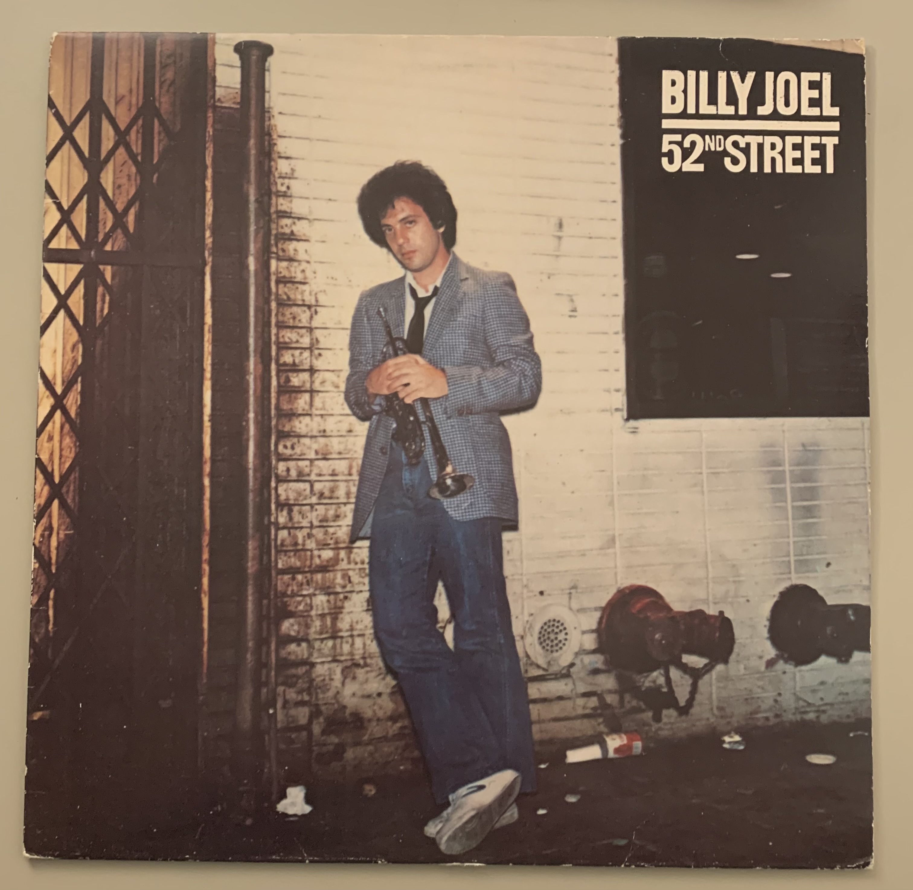

| Track | Zeit | Seite |
|---|---|---|
| Big Shot | 4:03 | 1 |
| Honesty | 3:52 | 1 |
| My Life | 4:44 | 1 |
| Zanzibar | 5:13 | 1 |
| Stiletto | 4:42 | 2 |
| Rosalinda's Eyes | 4:41 | 2 |
| Half a Mile Away | 4:08 | 2 |
| Until the Night | 6:35 | 2 |
| 52nd Street | 2:27 | 2 |
Dieses Album ist im Jahr 1978 erschienen. Nachfolgend finden Sie ein Bild des Covers:
